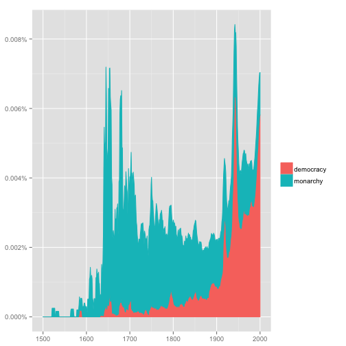
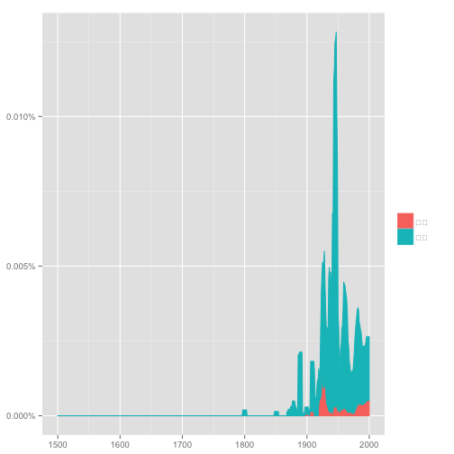
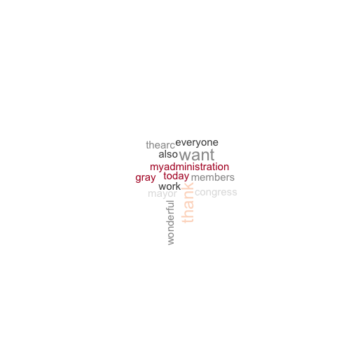

- Exploratory Data Analysis
- Corpus and linguistic annotation
- Crash course for R: Visualization
Linguistic Analysis and Data Science
lecture 06
謝舒凱 Graduate Institute of Linguistics, NTU
大綱
我們現在在哪裡？

{kind=link}
文本資料探索分析: A missing part
- Textual statistics (local and global)
- Textual data transformatio: from textual information to numerical vectors
- Corpus-based analysis and manual annotation (e.g., conversation structure)
參考課程教材
- Exploratory Data Analysis
- Corpus and linguistic annotation
- Crash course for R: Visualization
語料庫：概念
- 語料庫 (Corpus) 是自然語言處理與文本解析的基礎建設。
- 標記 (annotation) 是核心。It's linguistic in nature.
Good annotations support good applications
語料庫：工具
一般主要提供以下功能：
- Corpus building and indexing
- Concordance
- Frequency list
- (Grammatical) Collocations (and colligations)
- Keywords
- Thesaurus
- ngram
- Visualization
語料庫：網路服務
- 較具特色的(商用)系統：Word Sketch Engine
- 較具特色的(開放)系統 COPENS <- 敝帚自珍

語料庫練習
- 我們用斷過詞的總統文告版本來練習看看。
語料庫：較新的玩意 [I]
語料庫：較新的玩意 [II]

用 R 玩看看
ngramr: R package to query the Google Ngram Viewer
require(ngramr)
require(ggplot2)
ggram(c("monarchy", "democracy"), year_start = 1500, year_end = 2000,
corpus = "eng_gb_2012", ignore_case = TRUE,
geom = "area", geom_options = list(position = "stack")) +
labs(y = NULL)

這個圖怎麼解釋

[Exercise] 愛人與太太的消長
# rownames(corpuses)
ggram(c("情人", "太太"), year_start = 1500, year_end = 2000,
corpus = "chi_sim_2012", ignore_case = TRUE,
geom = "area", geom_options = list(position = "stack")) +
labs(y = NULL)

疑問
這和 tm 套件的 Corpus() 差別？
語料庫：標記、標記、標記（很重要的意思）
- 大型的語料標記系統：GATE, UIMA
- 各個 lab 可能都有自己的想法 蘿蔔標 lope.anno
- 語言訊息（語音語法語意語用）、概念、知識、情緒、什麼都可以標
標記的重要
第一層意義：
- 如果先標好了詞類訊息，語音合成就不會把當名詞的 contract 和當動詞的 contract 唸錯。
- 如果先標好了詞類訊息，命名實體 (Named Entities) 辨識器就容易把 highest-ranking general 和 the general opinion 中的 general (頭銜/形容詞) 分開來。
第二層意義：
- 沒有標記，面對小型資料就容易受限。
- 研究與應用的想像力因而受限。
標記的重點知識
- 標記語言選擇
xml,json - 標記標籤 (tagset) 的設計
- 標記者的同意率量度 (inter-annotator agreement)
大綱
- Exploratory Data Analysis
- Corpus and linguistic annotation
- Crash course for R: Visualization
Basic and Interactive Plots
- 取決於什麼樣的資料型態與要看什麼樣的關係，還有，妳要給讀者怎麼樣的印象與訊息。
- 製圖類型有流程判斷 (i.e., how to choose which type of graph to use)
- R 的作圖能力一流，不要浪費掉。基本指令熟悉後，可考慮
ggplot2,googleVis,rChart等等套件。 - 作圖複雜度隨著研究應用的需求提高（e.g., 多變量，互動，動畫模擬，網路，地圖等等）
Scatter plot
- Scatter plots are used primarily to conduct a quick analysis of the relationships among different variables in our data. (try adding elements such as text, labels, and lines.)
plot(cars)

Advanced scatter plot


3D scatter 也可以

Map 也沒問題
googleVis 的 gvisGeoMap()

簡言之
- 多利用網路資料學習，因為在技術層次教科書已經跟不上。
- 台灣 R 社群 (R User Group) 發展愈來愈好，可加入多學習
重點來了：文本資料怎麼辦
我們想要利用視覺化技術探勘文本中的訊息、趨勢、模式變化。例如
- 批踢踢語料中呈現的鄉民行為與社會網路
- 不同作者的書寫風格
- （選前選後的）政治觀點、主張、價值比較
基本的可能
- 文字雲 (word cloud) 與比較
- 關聯圖 (correlation plot) 與詞組樹 (phrase tree)
- 調整字型 (custom fonts) 與風格
Word Cloud
A word cloud is simply a graphical representation in which the size of the font used for the word corresponds to its frequency relative to others. Bigger the size of the word, higher is its frequency.
tm,wordcloud,RColorBrewer就可以做到。

也可以丟詞頻表
(中文) 字型與符碼選擇
#windowsFonts(JP = windowsFont("MS Mincho"))
#par(family = "JP")
par(family = "STKaiti")
wordcloud(doc, scale= c(2,0.5))
還有改符號的

文字雲也可以比較
- To construct a comparison cloud, we require the data to be in the form of a term matrix. The
tmpackage provides us with theTermDocumentMatrix()function that constructs a term document matrix:
colnames(data) <- c("bush","obama")
comparison.cloud(data,max.words = 250, title.size = 2,colors = brewer.pal(3,"Set1"))

用 correlation plot 來觀察文本差異

詞組樹
- A phrase tree or a word tree provides useful insight into text as it provides a context and not just the frequency of words. https://www.jasondavies.com/wordtree/

再講一個 motion chart
從多變量量化語言學角度下的文本視覺化
Visualization of textual data (Ludovic Lebart and Marie Piron)

Homework Bonus (20151022)
(預告) 期中 Hackathon 會是以政治領域資料為主的實作。
- 可以選定媒體或社群文本中的「人物」，「主題」，或是「事件」，甚至是歷年來的大選前時段的新聞資料，建立一個文本語料庫。
Reference
Graham Wilcock. 2009. Introduction to Linguistic Annotation and Text Analytics. Atmajitsinh Gohil. 2015. R Data Visualization Cookbook.